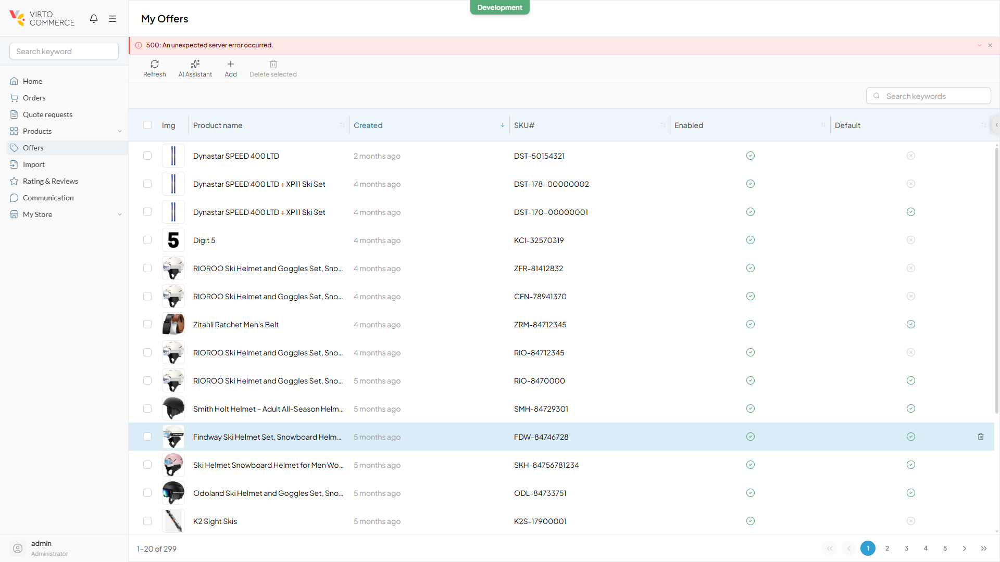
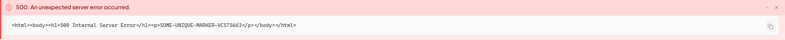
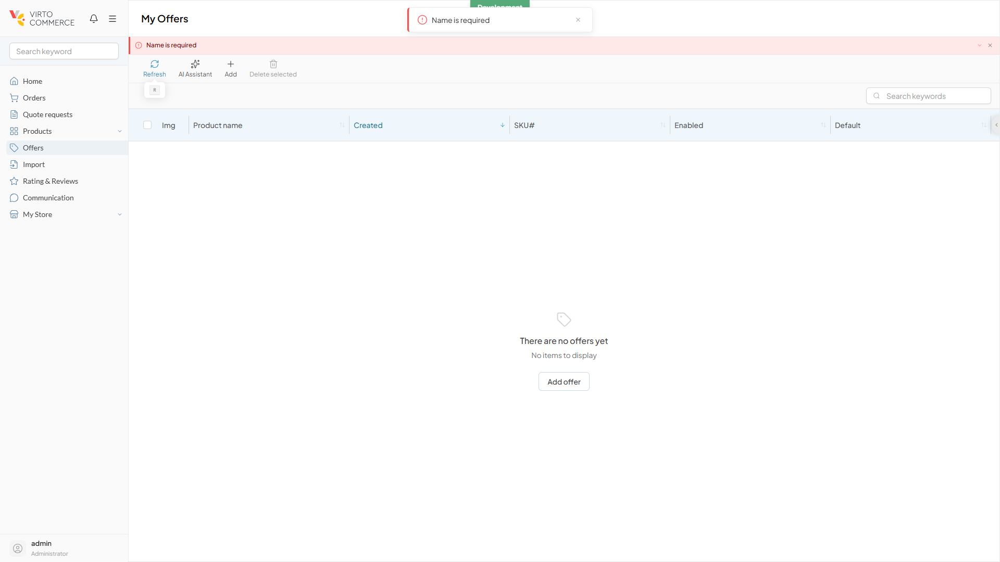
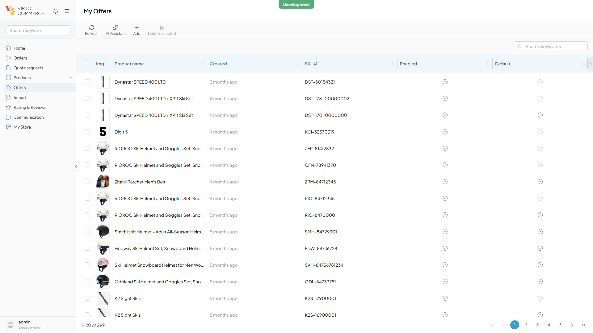

vc-shell and the Vendor Portal are a separate product — not the VC storefront and not the Platform Admin SPA. Storefront-calibrated rules (BL-UI invariants, storefront selectors, Coffee-theme a11y gating, the 123 regression suites) were consciously set aside; substitutions are listed in the verification report.
NSwag-generated API clients throw ApiException, whose response is the raw body as a string. The old code's generic if (e instanceof Error && "response" in e && e.response) branch recursed into the string branch; when the body was not JSON, JSON.parse threw and the whole body became the short message — which modules and useAsync render straight to the user.
The fix matches the ApiException shape structurally, before the generic branch. A JSON body is still delegated unchanged, so the platform's own message keeps winning.
function isApiExceptionWithStringBody(e) {
return e instanceof Error
&& typeof e.status === "number"
&& typeof e.response === "string";
}
// matched -> try JSON.parse(response), else:
// message = `${status}: ${e.message || "Error"}`
// details = raw body
Diff scope is error.ts plus error.test.ts only. useAsync/index.ts is byte-identical pre- and post-fix — including error.value = null on every call and the dedup key async-error-${parsed.message.slice(0,80)} — so the dedup repair is a genuine consequence of the shortened message, not a consumer-side patch.
The baseline is cited, not fabricated: error.ts was fetched at caf01504^ (pre-fix, the 2.4.0 line) and at v2.5.0, then exercised by an uncommitted scratch harness.
| Assertion | Pre-fix — RED | Post-fix — GREEN |
|---|---|---|
| HTML body stays out of short message | FAIL — message is the whole <html>…</html> | PASS — 500: An unexpected server error occurred. |
| Short message is the status line | FAIL | PASS |
Raw body preserved in details | PASS | PASS |
| Dedup id differs across statuses | FAIL — both <!DOCTYPE html><html><head><title>Error< | PASS — 500: … vs 502: Bad gateway |
| JSON body → platform message wins | PASS | PASS |
| Empty body → status fallback | FAIL | PASS |
| Three non-regression assertions | PASS | PASS |
| Total | 5 passed / 4 failed | 9 passed / 0 failed — 3 consecutive runs |
Only the server reply was synthesized, via Playwright route fulfilment. The NSwag client, parseError, useAsync, the notification store, the toast and the blade banner all ran as genuine deployed code, and every trigger was a real user click.
| Case | Injected | Observed on the fixed build | Result |
|---|---|---|---|
| TC-A | 500 text/html with a unique marker, three times | 500: An unexpected server error occurred. — identical on all three runs; no <html> and no marker as visible text | PASS 3/3 |
| TC-B | 500 and 502 sharing their first 83 characters | Two live toasts, ids async-error-500: … and async-error-502: … | PASS |
| TC-C | 400 application/json body {"message":"Name is required"} | Name is required — not 400: … | PASS |
| TC-D | routes removed, full reload | Blade loads 20 rows of 299 · zero console errors · 15 calls returning 200 | PASS |
All six captures below are from the vcmp-dev run. The Storybook agent reported three captures of its own, but they did not survive its teardown and are absent from disk — the Storybook findings therefore rest on its live measurements and axe output, not on stored images.


details, collapsed by default and escaped as text behind a deliberate expand.

Storybook does not exercise parseError — every story passes a literal string to the toast — so it does not confirm the fix. What it confirms is that the v2.5.0 build broke nothing on the surface the bug used to flood.
overlay-vctoast--* stories on the Light theme. role="alert" on the error variant against role="status" elsewhere is the correct split..vc-notification__content is max-height:100px; overflow:auto, the box is capped at max-width:600px with overflow-wrap:anywhere, and the template uses plain interpolation — no v-html anywhere in the toast chain — so markup renders escaped.None of these is caused by this fix.
200 refresh re-rendered all 299 rows while the 500: … banner stayed on screen. Framework useAsync does reset error.value = null on every call and is byte-identical pre- and post-fix, so the retained state is app- or blade-level.global-error-handler/index.ts:56 logs an unhandled rejection alongside the expected useAsync pair.global-error-handler keys dedup off errorKey(err), built from err.name and err.message rather than the parsed status line, so that path can still collapse a 500 and a 502 that share the generic ApiException message. Untouched by PR #293; the stated scope of the ticket is useAsync/index.ts:65, which is fixed.The clean-end-state rule asks whether the fix made a stale end state load-bearing: did the old path mask it, and does the new path no longer mask it? Here, no. PR #293 changes only the content of the return value of a pure function; the banner lifecycle is untouched, and under the old code the same banner would have persisted identically — merely containing the whole HTML document instead of one line. The staleness is orthogonal to the fix.
This is the one judgement call worth a second pair of eyes. A reviewer who reads the error surface as “the interaction this fix changes” would land on REOPEN instead.